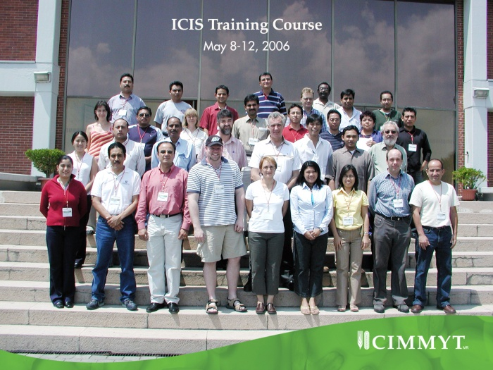

ICIS Training 2006
From ICISWiki
Back to Main Page > Workshops and Meetings
A training program and users' workshop was held from May 8-12 at CIMMYT to familiarize new users with ICIS breeding applications and to allow experienced users to interact with trainers and developers to solve problems and request new features.
The training followed the program recorded here. Since this was the first training in Latin America CRIL staff and CIMMYT provided simultaneous translation into Spanish and several participants translated some modules into Spanish.
Participants:
  ICIS Training Workshop, May 8 - 12, 2006, CIMMYT
ICIS Training Workshop, May 8 - 12, 2006, CIMMYT
| Name | Affiliation |
|---|---|
| Akinnola Akintunde | ICARDA |
| Juan Carlos Alarcon | CIMMYT |
| Miguel Anducho | CIMMYT |
| Natalia Barboza | Universidad de Costa Rica |
| Ismael Barrera | CIMMYT |
| Kyle Braak | CIMMYT |
| Fran Clarke | Agriculture and Agri-Food Canada |
| Warren Constantino | IRRI |
| Alexander Cosico | IRRI |
| Guy Davenport | CIMMYT |
| Ian DeLacy | The University of Queensland |
| William Eusebio | IRRI |
| Daniel Fernandez | CIMMYT |
| Luisa Gomez | CIMMYT |
| Sergio Gonzalez Galindo | CIMMYT |
| Alan Krivanek | CIMMYT |
| Jacob Lage | CIMMYT |
| Archie Roland Llorca | IRRI |
| Graham McLaren | IRRI-CIMMYT |
| Sandra Micallef | The University of Queensland |
| Anibal Mora | Universidad de Costa Rica |
| Jesper Norgaard | CIMMYT |
| Geronimo Ortega | CIMMYT |
| Arllet Portugal | IRRI |
| Russell Reinke | Yanco Agricultural Institute |
| Sebastian Ritter | CIMMYT |
| Efren Rodriguez | CIMMYT |
| Edwin Rojas Pachecho | CIP |
| Jorge Rosano | CIMMYT |
| Halagappa Shashidhar | University of Agricultural Sciences - India |
| Lilibeth Sison | IRRI |
| Edgar Alonso Torres Toro | National Rice Foundation of Venezuela, based in CIAT, Cali |
| Bindiganavile Vivek | CIMMYT |
| Shawn Yates | Agriculture and Agri-Food Canada |
| Cecilia Ynouye | CIP |